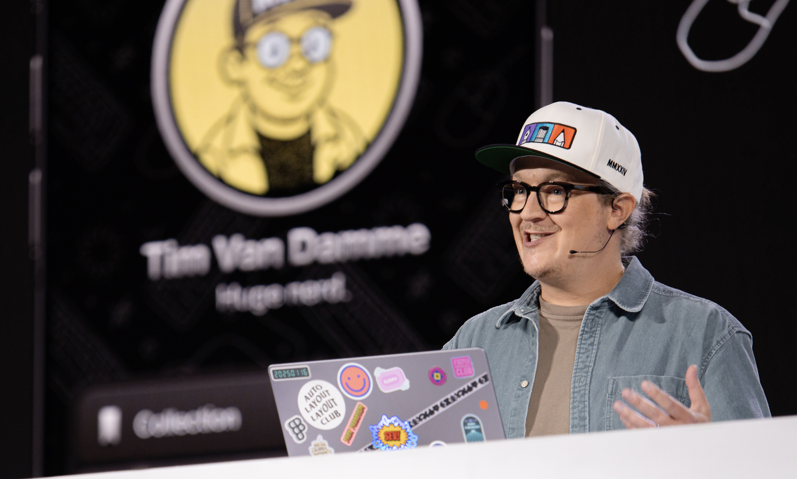

Tim Van Damme (aka. Max Voltar) is a product designer at Figma, where he owns the icon system and has helped shape UI3 and the surfaces around it — work that’s everywhere in the product and, by design, mostly unnoticed. Craft is the through-line. He sets a high bar, holds it, and pulls the work around him up to meet it.
He’s also a connector. He jams readily, prototypes to think, and makes a habit of asking the obvious question nobody else wants to raise. He builds community as seriously as he builds systems — from icons to the swag people actually want to wear — and has a reputation for making the people around him better without needing credit for it.